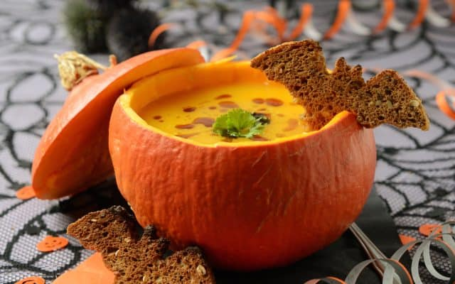
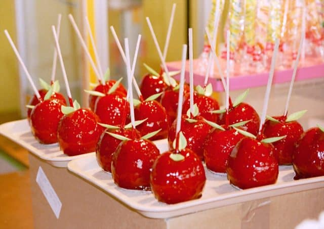
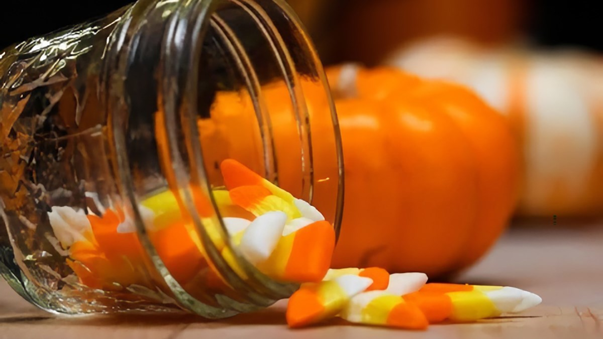
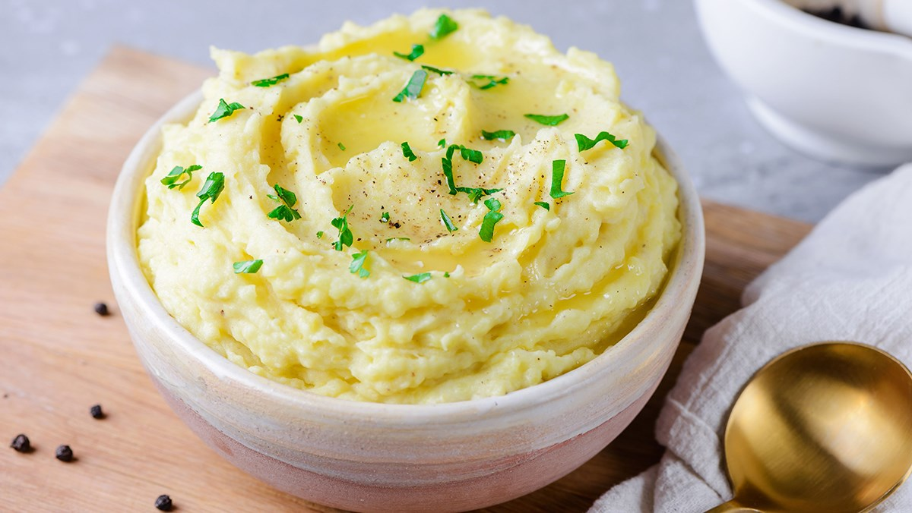
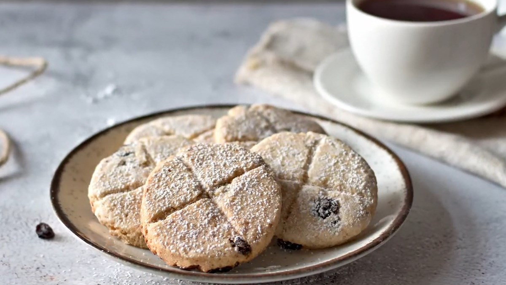
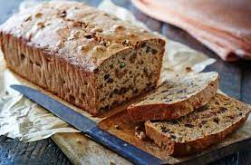
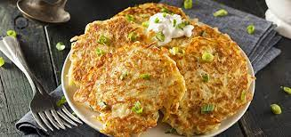

THÔNG TIN LIÊN HỆ
299/25 TDP Chợ,Đại Mỗ, Nam Từ Liêm, Hà Nội
Lê Tuấn Minh
0396080706
leminhtest@outlook.com.vn
Liên Kết
Halloween Nam
Halloween Nữ
Đồ chơi Halloween
Trang phục hóa trang
HỖ TRỢ

Bí đỏ là một biểu tượng đặc trưng trong ngày lễ Halloween. Chính vì thế các món ăn từ bí đỏ được coi là không thể thiếu trong ngày lễ này. Súp bí đỏ là một trong số các món ăn đó. Tùy thuộc vào từng đất nước sẽ có các cách chế biến món súp bí đỏ khác nhau như nấu cùng với thịt bò, thịt cừu hay chế biến thành một món cả người ăn chay đều có thể dùng được. Đây là một món súp sánh sệt đầu dinh dưỡng mà cả người lớn hay trẻ nhỏ đều thích ăn.
Kẹo táo là một trong những món ăn không thể thiếu trong dịp lễ Halloween. Bởi theo như lời người xưa lý giải, tháng 10 là thời điểm thu hoạch táo tại các vùng ở Hoa Kỳ, mà Halloween thì phải có kẹo nên người ta đã làm ra kẹo táo. Để làm loại kẹo này, bạn cần chọn những trái táo tươi ngon vừa mới thu hoạch rồi nhúng vào một lớp siro ngọt, sau đó dùng một cái que nhỏ cắm vào lõi để dễ cầm. Món kẹo táo có vẻ ngoài màu nâu đen đầy ma mị, cuốn hút cùng vị ngọt, thơm ngon vô cùng hấp dẫn.
Kẹo ngô là loại kẹo phổ biến ở Mỹ, xuất hiện lần đầu vào năm 1880 với tên gọi "Chicken Feed" và vẫn được ưa chuộng đến tận bây giờ. Đây có thể là loại kẹo gây tranh cãi nhất trong lễ Halloween. Mọi người có thể yêu thích nó hoặc cực kì ghét bởi mùi vị đặc biệt của kẹo và luôn là một chủ đề được bàn tán sôi nổi trong mùa Halloween và dịp cuối năm. Kẹo được làm chủ yếu từ siro ngô, đường, mật ong và màu nhân tạo. Đúng như tên gọi, mỗi viên kẹo có hình tam giác giống như một hạt ngô sau khi được tách khỏi lõi với ba màu trắng, cam và vàng.
Món khoai tây nghiền Colcannon này cũng bắt nguồn từ Ireland, Colcannon truyền thống được làm từ 4 nguyên liệu chính là khoai tây, bơ, sữa và cải xoăn. Ngày nay cũng có thêm một vài biến tấu cho món khoai tây nghiền này như là kết hợp cùng với thịt xông khói, kem, bơ, tỏi tây, hành lá, tiêu,... làm cho món ăn thêm hấp dẫn hơn. Đây là món không thể thiếu trong các bữa tiệc Halloween ở các nước phương Tây bởi hương vị thơm ngon và dễ chế biến.
Đây là một loại bánh quy có dạng tròn cùng với nho khô được trang trí hình chữ thập rất được yêu thích trong ngày Halloween. Tương truyền rằng các linh hồn thất lạc trở về vào đêm ngày 31/10, nếu cho họ ăn loại bánh này, họ sẽ không làm hại đến con người Cái tên "bánh linh hồn" cũng xuất phát từ niềm tin ấy. Ngày nay, để tạo thêm sự rùng rợn cho ngày Halloween, mọi người thường làm bánh linh hồn có hình dạng đầu lâu hay hình ma quỷ,... làm cho món bánh này thêm phong phú hơn.
Bánh mì Barmbrack (gọi ngắn là brack) bắt nguồn từ Ireland và nhanh chóng được ưa chuộng trong ngày Halloween khắp châu Âu rồi lan ra các vùng châu lục khác. Không có công thức cố định để làm ra món bánh mì này, chúng thường được nướng trong lò nướng, bột thì có kết cấu giống bánh mì thường, kết hợp với nhân là hoa quả sấy khô như nho, mâm xôi,... Theo truyền thống, sẽ có một vật phẩm được đặt bên trong cái bánh này và mọi người xem đây cũng như một trò bói toán dự đoán tương lai trong đêm Halloween. Ba đồ vật được trộn vào ngẫu nhiên với nhân bánh Barmbrack là một đồng xu, một miếng vải và chiếc nhẫn. Đồng tiền xu là biểu tượng cho sự may mắn về tiền bạc. Ngược lại, miếng vải tượng trưng cho sự khó khăn về tài chính. Còn chiếc nhẫn lại đem tới dự đoán về chuyện tình cảm của người nhận được nó.
Món bánh này xuất phát từ Ireland, được làm với những nguyên liệu chính là khoai tây gồm khoai tây nghiền, khoai tây cắt nhỏ và vụn khoai tây trộn đều tất cả với nhau rồi đem chiên trên chảo. Đây là một trong những món bánh chính trong ngày lễ Halloween ở các nước phương Tây. Khi thưởng thức Boxty Pancake, người ta thường ăn kèm với một loại kem sữa béo của Hy Lạp và nước đường được làm từ trái cây và cây thông. Bánh được trang trí xung quanh bằng những lát rau củ cắt nhỏ, nhiều màu sắc.
THÔNG TIN LIÊN HỆ
299/25 TDP Chợ,Đại Mỗ, Nam Từ Liêm, Hà Nội
Lê Tuấn Minh
0396080706
leminhtest@outlook.com.vn
Liên Kết
Halloween Nam
Halloween Nữ
Đồ chơi Halloween
Trang phục hóa trang
HỖ TRỢ